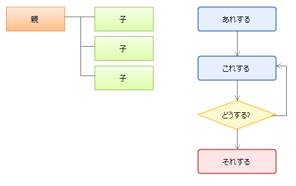

いろいろ書く
ノートには文章以外に手書き，図形，画像，表，ファイルなどを書くことができます。
手書きする
ノートに手書きするには，メインツールバーの 「手書き」ボタンをクリックして使用するペンを選びます。
ペンを選んだらノート上でドラッグ&ドロップすれば手書きできます。
「手書き」ボタンをクリックして使用するペンを選びます。
ペンを選んだらノート上でドラッグ&ドロップすれば手書きできます。
図形を追加
ノートに図形を追加するには，ツールバーの「図形の追加」ボタンをクリックして追加する図形を選択します。 追加したい位置をクリックするか，位置と大きさをドラッグ&ドロップで指定すると図形が追加されます。 また，追加した図形はツールバーの「図形のスタイルを選択」ボタンでスタイルを簡単に変更できます。

画像を追加
ノートに画像を追加するには，ツールバーの 「画像の追加」ボタンをクリックして追加する画像ファイルを選択します。
また，エクスプローラなどから画像ファイルをドラッグ&ドロップしても画像を追加できます。
「画像の追加」ボタンをクリックして追加する画像ファイルを選択します。
また，エクスプローラなどから画像ファイルをドラッグ&ドロップしても画像を追加できます。
ファイル・ショートカットを追加
ノートにファイルやショートカットを追加するには，
ツールバーの 「ファイルの追加」ボタンをクリックして追加するファイルを選択します。
また，エクスプローラなどからファイルをドラッグ&ドロップするとショートカットをノートに追加します。
Ctrlキーを押しながらドラッグ&ドロップするとファイルをノートに埋め込みます。
「ファイルの追加」ボタンをクリックして追加するファイルを選択します。
また，エクスプローラなどからファイルをドラッグ&ドロップするとショートカットをノートに追加します。
Ctrlキーを押しながらドラッグ&ドロップするとファイルをノートに埋め込みます。
表を追加
ノートに表を追加するには，ツールバーの 「表の追加」ボタンをクリックします。
表のセルの色はツールバーの「図形の色」ボタンで変更できます。
「表の追加」ボタンをクリックします。
表のセルの色はツールバーの「図形の色」ボタンで変更できます。